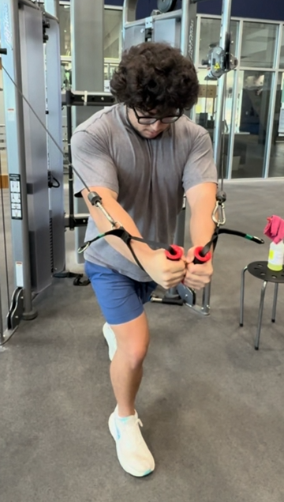

Build Strength. Train Smarter.
Welcome to Strength Training and Conditioning, a resource designed to help you learn more about weightlifting, exercise selection, and effective strength training. This website is designed to introduce beginner-level knowledge to people interested in getting into training and conditioning. Understanding the fundamentals of strength training is important for efficiency and growth, and understanding important training concepts and terminology can help you become a more confident and informed lifter.

About Me
Strength training has been an important part of my life for a little more than 2 years. I genuinely believe that the absolute best thing a person can do for themselves is train. This website is about strength training specifically, but any sort of training can benefit you so much. I am a wildly different person than I was 2 years ago. I can genuinely say that the gym changed my life, and it has only been a relatively short time. The accomplishment that I feel from getting an extra rep, or even just adding 5 pounds to something that I could not do before, is astonishing. Training is hard. Consistency is hard. Effort is hard. But without a doubt, it will reward you, both physically and mentally.
I created this website because I wanted to put together a resource that introduces the basics of strength training in a straightforward way. I know that getting started can be intimidating when there is so much information out there, and I wanted this site to provide a simple starting point for people who are interested in learning more.
Contact MeWhy Train?
Build Strength
One of the biggest reasons people strength train is to become stronger. Consistently challenging your muscles gives your body a reason to adapt and become better at handling resistance. Over time, this can make everyday activities and physical challenges feel easier while also helping you make progress in the gym.
Improve Performance
Strength training can also help improve how you perform in sports, recreational activities, and other physical tasks. Building strength, power, and muscular endurance can help your body perform movements more effectively. A well-rounded training routine can be useful whether your goal is improving athletic performance or simply becoming more capable in your everyday life.
Develop Good Habits
Making progress in the gym takes more than having one great workout. Training consistently, learning proper technique, getting enough recovery, and staying committed to your routine all play a role in long-term progress. Building these habits can make training more enjoyable and help you create a routine that you can stick with over time.
Mental Fortitude
Training is hard, and strength training is no exception. There is a common idea that people who are consistent in the gym must simply love working out all the time. While the gym can definitely be fun, there are plenty of days when training is difficult and the last thing you want to do is push yourself through another hard workout. Sticking with something even when it is difficult can build discipline, mental toughness, and the ability to keep working toward a goal when the motivation is not always there. Over time, that mindset can become just as valuable outside of the gym as it is inside it.
Build Confidence
Getting stronger can change more than just what you can lift. Seeing yourself improve over time, whether that means adding weight to a movement, getting another rep, or simply becoming more comfortable in the gym, can give you a real sense of accomplishment. Strength training gives you something you can work toward and measure for yourself, which can make the progress you see along the way especially rewarding.
Learn About Strength Training
Strength training is about more than just lifting weights. There is a lot that goes into building an effective workout, from choosing the right exercises and using proper technique to understanding how much weight, volume, and rest you need. Recovery and consistency are also important parts of making progress over time. Having a better understanding of these basics can help you get more out of your workouts and understand why you are doing certain exercises. Whether you are new to strength training or have been working out for years, having a solid foundation can help you train with more confidence and purpose.
Visit the Training Information page to learn more about the fundamentals behind effective strength training, as well as terminology needed for beginners.
Training InformationReady to Get Started?
Explore the exercise library to get an idea of good exercises for each muscle group.
Explore Exercises